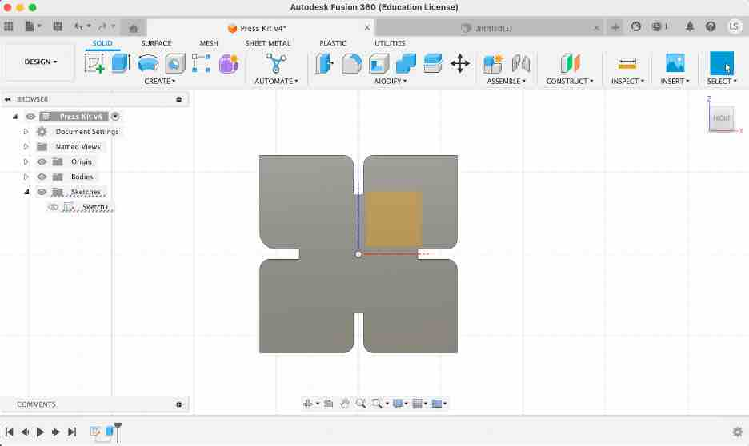

<br>
## 2D Cutting
<h3>Storybook Automata</h3>
Before embarking on 2D modeling and cutting projects, I spent some time thinking about what would be something cool to build out of 2D cutouts. I discovered a whole world of kinetic theatre sculptures which I find inspiring; a convergence of the mechanical and the creative. I hope to learn enough to be able to contruct one of these.
Here's a video of some whimsical examples. In order to do this, besides artistic skills, I would need to construct mechanisms that would convert to different motions in the sculptures. Something to aspire towards.
<br>
<iframe width="560" height="315" src="https://www.youtube.com/embed/kv1CpJi60xQ" title="YouTube video player" frameborder="0" allow="accelerometer; autoplay; clipboard-write; encrypted-media; gyroscope; picture-in-picture; web-share" allowfullscreen></iframe>
<br>
I think you would agree these examples are really inspiring!
<div class="main">
<h3>Press Fit Kit</h3>
<br>
<h4>First Attempt</h4>
As wise others who came before me, a journey of a thousand miles should be attempted first wtih the first step. I struggled and failed my first try at creating a simple press fit shape. Here is what happened and my learnings.
<h5>Designs</h5>
I tried to follow a design for a simple square piece with four notches. While I was not successful, I did learn about the different modes in Fusion 360 and various ways to get to an end result. For example, putting the middle of the square piece on the origin enabled creation of one notch and then using the circular repetition the create the other four notches. Mirroring a pattern along a dimensional line is also a useful technique I was able to use for the Scisssors project below. Finally, the consideration of the material the laser takes out in the measurement of the width of the notches to provide enough friction and the fillet method to round the edges and make the material more robust in use.
<div class="caption">
<img src="Jun22FirstAttempt1.jpg" alt="2D Square with 4 notches" width="500">
Simple square with 4 notches, accounting for cardboard thickness and laser material removal. </div>
<div class="caption">

Added the fillet to each of the corners. </div>
<div class="caption">
<img src="Jun22FirstAttemptNotches.jpg" alt="Art Studio Roof" >
Tried to add 4 additional notches and resulted in errors so I could not render it. Lesson learned would be to try a "prototype" with the more simple design first.</div>
<br>
<h5>Results:</h5><br>
Having failed to extend to a more complex design, I wanted to get a print done in order to go through the entire workflow. This also turned out not as expected...another learning moment.
<div class="caption">
<img src="FirstAttemptCut.jpg" alt="2D cutting of design" width="500">
I learned here that the dimensional lines also transfer to the dxf file and can be in the print unless you ensure they are not RED in the file. I think for my workflow, it is better before exporting to try to remove all the artifacts that I do not want to be cut (or engrave) lines instead of doing this on the 2D laser printer computer as this is a shared resource. </div>
<div class="caption">
<img src="FirstAttemptResults.jpg" alt="Results of first attempt" width="500">
While not what I designed, this is my first cut on the 2D laser printer and because of this, it is still beautiful!</div>
<br>
</p>
<p>
<h4>Second Attempt</h4><br>
A new day, new possibilities. After being met with failure the previous day, I was able to successfully design what I had intended the prior day and print it. The results are below including how I resolved challenges and the two creations I built from my press kit.
<h5>Designs:</h5><br>
This time I saved multiple files to ensure I was able to go from simple to more complex. I started with sketching out the square with the four notches, removed all artifacts like dimensional lines and saved this file. Then I went for the 8 notch design with fillets to turn it into a flower shape.
<br>
<div class="caption">
<img src="2ndAttempt01.jpg" alt="Sketch of 4 notch design" width="500">
Second attempt at sketching square with 4 notch design.
</div>
<div class="caption">
<img src="2ndAttempt02.jpg" alt="Extruding the shape" width="500">
Extruding the shape.
</div>
<div class="caption">
<img src="2ndAttempt03.jpg" alt="Adding the additional 4 notch for an 8 notch design" width="500">
After saving a back up file, I attempted again the additional 4 notches. Realized making sure I get the right icon before drawing a line will ensure cut lines are connected. This is important to be able to successfully render the image. I found it is better to be accurate the first time than to try to debug the situation later.
</div>
<div class="caption">
<img src="2ndAttempt04.jpg" alt="Turning square into a flower." width="500">
It's a flower!
</div>
<div class="caption">
<img src="2ndAttempt05.jpg" alt="Now in 3D" width="500">
Extruded this design into 3D. It is important when switching between sketch and extrude mode to orient yourself to what axis is set.
</div>
<div class="caption">
<img src="2DCutMassProduction.jpg" alt="Creating a print template with many of the designs" width="500">
While it would have been more prudent to do a test print, I couldn't help myself and printing a whole batch to make a press fit kit. I copied an pasted the design on the sheet before converting to PDF. Fingers cross the notches work...
</div>
<div class="caption">
<img src="2DPrintSecondAttempt.jpg" alt="Out of the oven" width="500">
The results reminded me of baking gingerbread cookies! Given all the cardboard I have cut with a knife in my life, I can see how a laser printer could make life so much easier.
</div>
Well, it turned out that the pieces fit together looser than I would like. In future I would pick out my piece of cardboard and set the notch width all in variables. I did not do this as diligently as I needed in order to make a few updates. So, I cheated a bit. I found a thicker piece of cardboard and did another print run. And this time it worked!
<br>
<h5>Results:</h5><br>
Using the press fit kit, I made two creations. First one is entitled, "Confrontation with a Dragon" and the second one is "House in a Snow Storm". Enjoy!
<img src="DragonVersion.jpg" alt="Art Studio Roof" width="500">
<img src="DragonCloseUp.jpg" alt="Art Studio Roof" width="500">
<img src="House2DCutting.jpg" alt="Art Studio Roof" width="500">
</p>
<p>
<h4>Scissors</h4><br>
<h5>Designs:</h5><br>
<img src="ScissorsPencilDrawing.jpg" alt="Art Studio Roof" width="500">
<img src="Scissors01.jpg" alt="Art Studio Roof" width="500">
<img src="Scissors02.jpg" alt="Art Studio Roof" width="500">
<img src="Scissors03.jpg" alt="Art Studio Roof" width="500">
<img src="Scissors04.jpg" alt="Art Studio Roof" width="500">
</p>
</div>